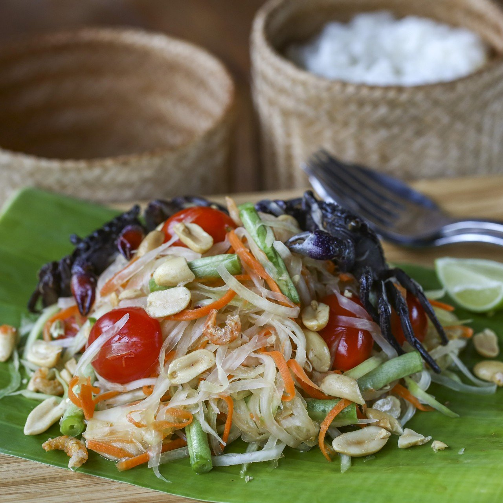
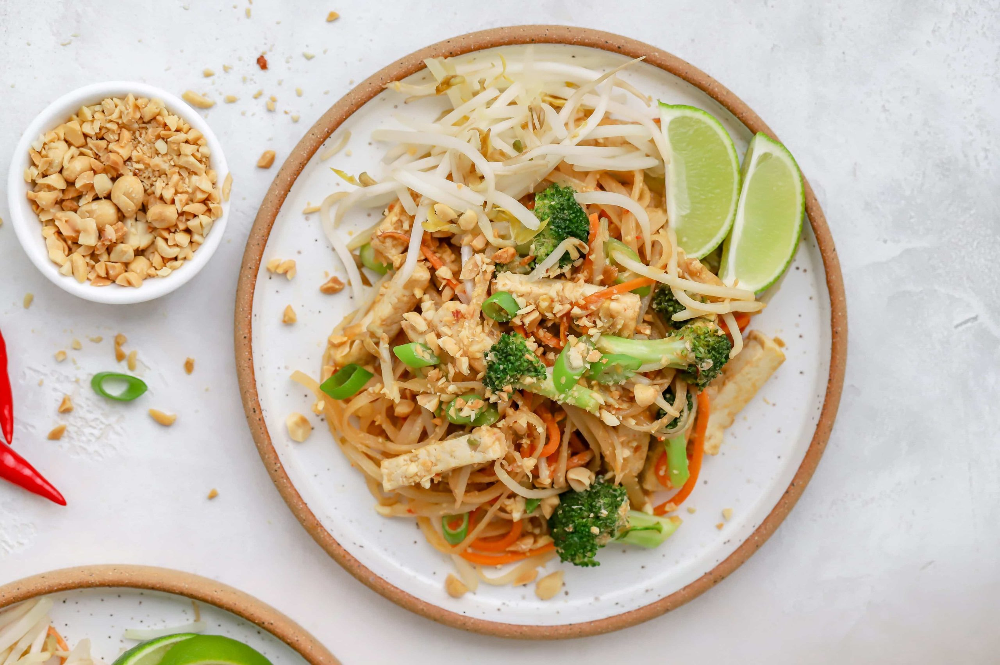
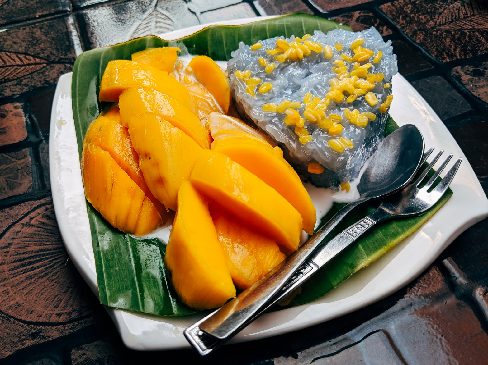

Popular Thai Food
Restaurants
Appetizers
Papaya Salad
Papaya Salad is a spicy salad made from shredded papaya. Originated from Laos and commonly known through Southeast Asia. In Thailand, it's known as som tam. "Som" meaning "sour" and "tum" refers to the pounding sound of the large pestle and mortar used to crush the ingredients.
Ingredients
- 1 large small clove of peeled garlic
- ¼ teaspoon salt
- 1 tablespoon dry-roasted salted peanuts, more for garnish
- 2 fresh bird chilies or serrano chilies, sliced
- ½ teaspoon raw sugar or white sugar
- 1 tablespoon dried shrimp (optional)
- 2 tablespoons fresh lime juice
- 1 to 2 tablespoons fish sauce (nam pla), to taste
- 2 plum tomatoes, 1 large round tomato, or 8 grape tomatoes, coarsely chopped
- ½ pound long beans, trimmed and cut into 1 1/2-inch lengths (optional)
- 1 small to medium green (unripe) papaya
- Lettuce for serving (optional)

Entrees
Pad Thai
Pad Thai is a stir fried noodle dish. It is typically made with rice noodles, chicken, beef or tofu, peanuts, a scrambled egg, and bean sprouts, among other vegetables. Pad thai was popularized by the Thai Government in the 1930s to promote national unity.
Ingredients
- Kosher salt
- 8 oz. wide rice noodles
- 2 tbsp. lime juice
- 2 tbsp. brown sugar
- 1 tbsp. fish sauce
- 1 tbsp. low-sodium soy sauce
- 1/4 tsp. cayenne pepper
- 2 tbsp. vegetable oil
- 1 bell pepper, thinly sliced
- 2 cloves garlic, minced
- 2 eggs, lightly whisked
- 1 lb. shrimp, peeled and deveined
- Freshly ground black pepper
- 2 green onions, thinly sliced
- 1/4 c. roasted peanuts, chopped

Link to Recipe on Delish
Desserts
Mango Sticky Rice
Although it originated in Thailand, mango sticky rice is enjoyed throughout South and Southeast Asia. Also called Khao Neow Ma Muang, this traditional summer dessert is made with sticky (glutinous) rice, mangoes, coconut milk salt and sugar or palm sugar.
Ingredients
- Glutenous or
"sweet" rice
- Coconut milk
- Mango
- Sugar

Link to Recipe on InquiringChef